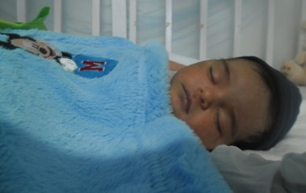
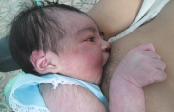

¿Cómo es tu bebé de cero a tres meses?
 
Tu bebeito acaba de nacer y es importante que conozcas como va ser su desarrollo en los primeros meses. Es indefdenzo y depende totalmente de ti, lo que exige una atención constante de tu parte. Desde los primeros días de su vida, tu bebe, oye, siente el calor, el frio y distingue algunos olores y sabores. Su llanto es la forma de reclamar tu atención, cuando necesita o le molesta algo y, en especial cuando requiere el calor de tus brazos y de tu amor.
Durante los tres primeros meses, la vista y el oido se le desarrollan intensamente. Poco a poco va fijando su mirada en las personas y en los objetos que estan cerca de el, tambíen puede seguirlos con la vista cuando se mueven. Ya en el tercer mes sonrrie, mueve brazos y piernas, emite algunos sonidos y manifiesta alegr&iacuote;a ante algunas personas que lo atienden
¿Qué debes hacer para que tu niño cresca sano y feliz ?
Brindale afecto. Todos los niños necesitan sentirse queridos, muestrale cariño a tu hijo, abrazalo, acaricialo, besalo. hablale y sonriele cuando lo alimentes, limpies, bañes, cambies y en todas las actividades que realices con el. Si el bebe llora es porque tiene hambre, frio, sed, dolor, está mojado, desea cambiar de posición; calmalo, no lo dejes solo, trata siempre de que alguna persona este siempre cerca de el.
Realiza actividades para desarrollar su inteligencia y sus movimientos
Cargalo ponlo frente a ti y que te mire. Hablale suavemente para que se fije en ti. Acerca su cara a un juguete o alguna cosa llamativa por el color o el sonido, cuando se fije en el mueve el objeto de un lado a otro, si lo sigue con la mirada, puedes moverlo tambien de arriba a abajo. Aprovecha este momento para acercar y alejar tu rostro de la cara del niño como el juego del tope-tope. Esto tambiépuedes hacerlo acostando al niñ bocaabajo así contribuyes a que levante la cabeza y el pecho, para que tu bebé se sienta bien, puedes en algunos momentos pasarle la parte de arriba de tus manos por la espada como un caricia, a ambos lados de la columna vertebral, con las nalguitas haciá arriba, verás lo rtranquilito que se queda, tambié puedes sujetarlo suavemente por los tobillos y hacerle cosquillitas, pasandole un dedo por las plantas de los pies
Háblale desde distintos lugares cercanos de el para que trate de buscar de donde viene el sonido, convérsale aún cuando estes en los trajines de la casa, el no te entiende pero te escucha y se siente bien porque esta acompañado. Repite los sonidos que le escuches(eee,ooo,suspiritos). Si no emite ningún sonido hazlo tu, aunque al principio no te imite después lo hará
En el segundo y tercer mes tambíen puedes realizar estas cosa: coloca frente al niño un juguete liviano para que trate de cojerlo, si al principio no lo hace, poncelo en su mano para que aprenda a agarrar. LLamalo por su nombre con un tono de voz alegre, sonriele para que te mire, esto es importante para que el se anime, se mueva y emita sonidos, a veces se queda quieto y te mira fijo, esto también es una respuesta a lo que tu le haces